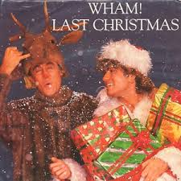
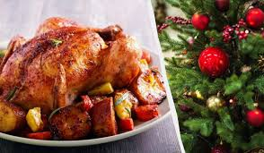

Декор і стиль
Ідеї для прикрашання вашого дому у святковому стилі. Спробуйте створити власні новорічні прикраси!
- Прикрасьте ялинку гірляндами та тематичними іграшками.
- Використовуйте свічки для створення затишної атмосфери.
- Зробіть вінок з натуральних гілок і шишок.

Музика та звуки свята
Слухайте новорічні плейлисти або додайте звуки каміна до вашого вечора.
- Класичні мелодії: «Jingle Bells», «Silent Night».
- Сучасні хіти: плейлист із популярними треками.
- Звуковий фон: шум снігу, потріскування вогню. 
Рецепти
Готуйте смачні страви, які створюють справжню атмосферу свята.
- Імбирні пряники з глазур’ю.
- Глінтвейн або какао з маршмеллоу.
- Салат «Олів’є» у святковому оформленні. 
Розваги
Обирайте фільми, ігри або створюйте свої квести для веселих вечорів.
- Класичні фільми: «Один вдома», «Ельф».
- Настільні ігри для компанії.
- Організація домашнього квесту.
Календар підготовки
Скористайтеся нашим чеклістом, щоб нічого не забути!
- 15 грудня: Почати підготовку прикрас.
- 20 грудня: Купити подарунки.
- 25 грудня: Спланувати святкове меню.
- 31 грудня: Зустріти Новий рік у хорошому настрої!
Творчість
Спробуйте створити щось власноруч, щоб зробити свято ще особливішим.
- Генератор святкових листівок.
- Ідеї подарунків своїми руками.
- Написання листів Діду Морозу для дітей і дорослих.